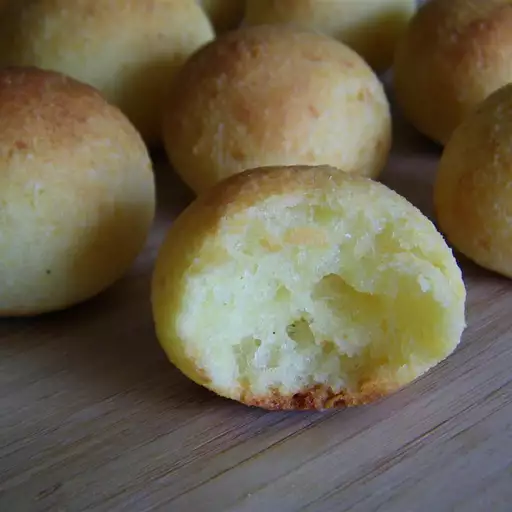

Pão de Queijo

Description
These pão de queijo are very easy, very tasty Brazilian cheese rolls, much like you might find at a churrascaria.
Ingredients
- 2 cups tapioca starch
- 1 teaspon salt (Optional)
- ½ cup vegetable oil
- ⅓ cup water
- ⅓ cup milk
- 6 ounces shredded Parmesan cheese
- 2 large eggs
Steps
- Preheat the oven to 375 degrees F (190 degrees C). Lightly grease a baking sheet
- Place tapioca starch and salt in a large bowl.
- Bring oil, water, and milk to a boil in a saucepan over medium heat until a white foam appears. Pour milk mixture over tapioca starch mixture; stir until well mixed and allow dough to rest for 15 minutes.
- Mix Parmesan cheese and eggs into dough until well combined. Shape dough into 1 1/2-inch balls and place on the prepared baking sheet.
- Bake in the preheated oven until rolls are browned, 15 to 20 minutes.